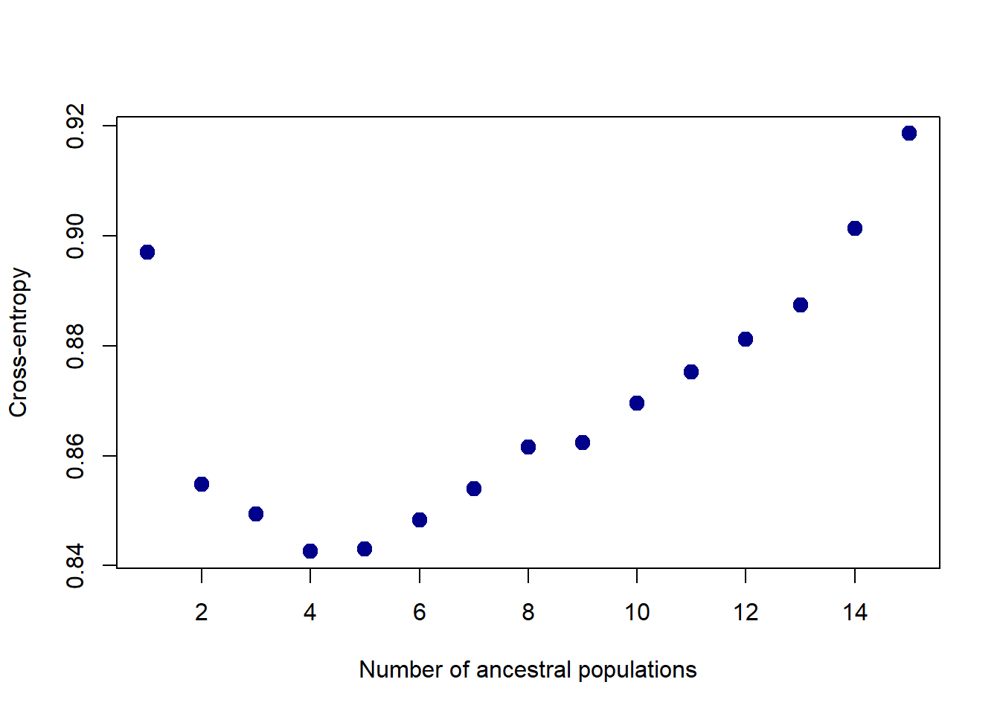

Principal component analysis
Brief description
My study is about dissecting the genetic control of resistance in black poplar. To dissect the genes, I will model the association between the genes and the resistance components that I have already mentioned in the first three parts of this GH series. This association modeling is called Genome-Wide Association Study (GWAS).
Resistance components
The data were collected from laboratory experiment.
Genetic data
The data is stored in “SNP_rust_filter.ped”. It is a .ped file generated using Plink. It contains 7 800 SNPs that are marking the genes of 154 black poplar’s genome.
Correction factor for GWAS
Population structure or location groupings of individuals can introduce bias in GWAS. It can be considered similar with blocking concept as in experimental design. It barriers the continuous genetic variance in individuals across geographical locations. It’s led to the similarity between individuals that come from the same geographical location.
So, I will make a correction matrix consisting of K groups of similarity and 154 individuals. The method I use is Principal Component Analysis (PCA) that groups individuals with similar variance in one group and individuals with significantly different variance in another. The PCA will calculate the closeness of each individual to each of the K groups in terms of admixture coefficients (Q) I will have to determine the K a priori, which I will show you in this section.
I will use PCA model from LEA package developed by Bioconductor - LEA
Preparation
I’m loading the LEA package and the genetic data. As LEA cannot read .ped format, my file should be converted to a LEA-friendly format using ped2lfmm() function. See LEA Reference Manual - LEA.pdf (bioconductor.org).
# PCA modeling
library(LEA)
# Data wrangling
library(readxl) # To load the population names
library(tidyr) # To tidy the dataset
# Plotting
library(RColorBrewer) # To get plot colors
library(ggplot2) # To plot the admixture coefficients
library(forcats)
library(ggthemes)
library(patchwork)genot_data = ped2lfmm(input.file = "SNP_rust_filter.ped",
output.file = "SNP_rust_filter.lfmm",
force = TRUE)##
## - number of detected individuals: 154
## - number of detected loci: 7805I store the data in genot_data object and upon running it, you will get the result: “number of detected individuals” and “number of detected loci”. However, this syntax only allows me to convert .ped to .lfmm and stores it in my local computer. It has not imported the file into R. To import the file, I have to write the following syntax:
genot = read.lfmm(genot_data)Now the data has been imported to R.
Running the model
As I mentioned before, I have to create a correction matrix consisting of K groups of closeness and 154 individuals. The K should be determined arbitrarily. As my individuals are coming from 12 populations, it should be safe to assume that the groupings should be between 1 to 12. But to give some room for variation, I put the range between 1 to 15. It is defined in the argument K in the syntax of snmf() function.
For further information about the function and PCA model, see LEA.pdf (bioconductor.org)
pop_structure2 = snmf(input.file = genot_data, K = 1:15,
ploidy = 2, entropy = T,
alpha = 100,
project = "new")summary(pop_structure2)## $repetitions
## K = 1 K = 2 K = 3 K = 4 K = 5 K = 6 K = 7 K = 8 K = 9 K = 10 K = 11 K = 12 K = 13 K = 14 K = 15
## with cross-entropy 1 1 1 1 1 1 1 1 1 1 1 1 1 1 1
## without cross-entropy 0 0 0 0 0 0 0 0 0 0 0 0 0 0 0
## total 1 1 1 1 1 1 1 1 1 1 1 1 1 1 1
##
## $crossEntropy
## K = 1 K = 2 K = 3 K = 4 K = 5 K = 6 K = 7 K = 8 K = 9 K = 10 K = 11 K = 12
## min 0.8970495 0.8547834 0.8494508 0.8426045 0.8430669 0.8482799 0.8539506 0.8615982 0.8623826 0.8696264 0.8752486 0.8811998
## mean 0.8970495 0.8547834 0.8494508 0.8426045 0.8430669 0.8482799 0.8539506 0.8615982 0.8623826 0.8696264 0.8752486 0.8811998
## max 0.8970495 0.8547834 0.8494508 0.8426045 0.8430669 0.8482799 0.8539506 0.8615982 0.8623826 0.8696264 0.8752486 0.8811998
## K = 13 K = 14 K = 15
## min 0.8874606 0.9013668 0.9186521
## mean 0.8874606 0.9013668 0.9186521
## max 0.8874606 0.9013668 0.9186521The important information is the cross entropy (stored in $crossEntropy from the summary of the model. You should get K with the lowest cross entropy because to simply put it, it’s the one with the smallest deviation from the real population values. In this case, I will probably go with K = 4
plot(pop_structure2, col = "blue4", cex = 1.4, pch = 19)
Matrix of correction (admixture matrix)
It can also be called admixture matrix. This matrix can be extracted from the model for K = 4.
Each row in the matrix includes the degree of closeness of an individual to each of the Ks. I name them Q1 - Q4. If I include the population names, the admixture matrix can classify the mixtures of individuals’ genetic variance from different geographical locations.
qmatrix <- Q(object = pop_structure2, K = 4)
head(qmatrix)## V1 V2 V3 V4
## [1,] 9.9991e-05 0.167765 0.732430 0.0997049
## [2,] 9.9990e-05 0.197581 0.731383 0.0709365
## [3,] 9.9990e-05 0.210565 0.731945 0.0573899
## [4,] 9.9990e-05 0.173151 0.698376 0.1283730
## [5,] 9.9990e-05 0.159667 0.798517 0.0417158
## [6,] 9.9991e-05 0.172299 0.771327 0.0562739# Assigning the names of ancestral populations K
colnames(qmatrix) <- c("Q1", "Q2", "Q3", "Q4")
head(qmatrix)## Q1 Q2 Q3 Q4
## [1,] 9.9991e-05 0.167765 0.732430 0.0997049
## [2,] 9.9990e-05 0.197581 0.731383 0.0709365
## [3,] 9.9990e-05 0.210565 0.731945 0.0573899
## [4,] 9.9990e-05 0.173151 0.698376 0.1283730
## [5,] 9.9990e-05 0.159667 0.798517 0.0417158
## [6,] 9.9991e-05 0.172299 0.771327 0.0562739Tidying the dataset
The dataset hasn’t had individual and population names. So, I will convert the matrix into a dataset and assign the names. The individual names are assigned in SNP dataset and the population name is in a raw dataset called B4EST_Selection_Tests.
df_qmatrix <- data.frame(qmatrix)
# Assigning individual names + population of origin
SNP = read.table("SNP_rust_filter.ped") # To get the individual names
ind_names = as.vector(SNP$V1)
df_qmatrix$Ind = ind_names
# To get the population names
pop = read_xlsx("B4EST_Selection_tests_multisouches_Task1.3.xlsx",
sheet = 1)
pop_filter = pop[pop$Nom_genotype %in% ind_names, ]
df_qmatrix$Pop = pop_filter$Population
df_qmatrix = df_qmatrix[order(df_qmatrix$Pop), ]
# Ordering the columns
df_qmatrix = df_qmatrix[, c("Ind", "Pop", "Q1", "Q2", "Q3", "Q4")]
head(df_qmatrix)## Ind Pop Q1 Q2 Q3 Q4
## 41 BDX-02 Adour 0.014513200 9.99821e-05 0.985287 9.99821e-05
## 42 BDX-03 Adour 0.000099991 7.91112e-02 0.898880 2.19084e-02
## 43 BDX-08 Adour 0.000099982 3.87025e-02 0.961098 9.99820e-05
## 45 CTR-05 Adour 0.006656400 9.64613e-02 0.896782 9.99910e-05
## 46 CTR-09 Adour 0.000099982 5.46214e-02 0.945179 9.99820e-05
## 47 71041-3-402 Adour 0.314348000 1.08450e-01 0.425144 1.52058e-01I then save the dataset as an admixture matrix for my population.
# Saving the dataset for GWAS ----
write.table(x = df_qmatrix[, -2],
file = "covariate_popstruct.txt",
sep = "\t",
dec = ".",
row.names = FALSE,
quote = FALSE)Visualization
# Tidying the dataset, from wide to long
df_qmatrix_long <- gather(df_qmatrix, key = "Coeff",
value = "Q", -c("Ind", "Pop"))
# Plotting the admixture coefficients ----
Q4_plot <-
ggplot(data = df_qmatrix_long, aes(x = factor(Ind), y = Q, fill = factor(Coeff))) +
geom_col(color = "gray", size = 0.1) +
facet_grid(~fct_inorder(Pop), switch = "x", scales = "free", space = "free") +
theme_minimal() +
labs(x = "Individuals", title = "K = 4", y = "Admixture coefficients") +
scale_y_continuous(expand = c(0,0)) +
scale_x_discrete(expand = expansion(add = 4)) +
theme(
panel.spacing.x = unit(x = 0.1, "lines"),
axis.text.x = element_blank(),
panel.grid = element_blank()
) +
scale_fill_gdocs(guide = FALSE)
Q4_plot
The bar graph visualizes the admixture matrix of the individuals in several populations. Each bar represents an individual and the mixture of its genetic variance. As I have the grouping factor of K that is equal to 4, I calculated how close an individual to each of the Ks. This measure of closeness classifies the mixtures of individuals’ genetic variance from different geographical locations. Individuals from the same location tends to have similar mixtures. For example, individuals from Adour (France) have completely different mixtures from individuals from Ticino (Italy).
Furthermore, we can also say this closeness between individuals will affect the expression of their genes, i.e. in resistance. Closely-related individuals tend to have genetic resemblance, and, in terms of resistance, similar resistance to pest attack. This is the bias that geographical locations introduce to GWAS. Hence, I used the admixture matrix as correction matrix in GWAS.